<div class="tartalom" [ngClass]="temaSzinGordulo">
  <div class="video-chat-container" [ngClass]="temaSzinBetu">
    <div class="video-keret" [ngClass]="temaSzin">
      <iframe
        [src]="videoUrl | safeUrl"
        frameborder="0"
        allow="accelerometer; autoplay; encrypted-media; gyroscope; picture-in-picture"
        allowfullscreen>
      </iframe>
      <h2>MEXICO CITY GRAND PRIX 2025</h2>
    </div>

    <div class="chat-container" [ngClass]="temaSzin">
      <div class="chat-box" #chatBox (scroll)="gorgetes()">
        <div *ngFor="let uzenet of uzenetek" class="chat-message" >
          <div class="message-header">
            
            <div class="message">
              <p class="sender-name">{{ uzenet.felhasznalo}} </p>
              <p class="text">{{ uzenet.uzenet }}</p>
            </div>
          </div>
        </div>
      </div>

      <hr [ngClass]="temaSzinHr" *ngIf="uzenetKuldesMegjelenites">

      <div class="input-container" [ngClass]="temaSzin" *ngIf="uzenetKuldesMegjelenites">
        <div class="profile-picture">
          
        </div>
        <input [(ngModel)]="ujUzenet" (keyup.enter)="uzenetKuldes()" placeholder="Írj egy üzenetet..." [ngClass]="temaSzin2" />
        <div class="send-icon" (click)="uzenetKuldes()">
          
          
        </div>

      </div>
    </div>
  

  </div>
  <app-footer></app-footer>
</div>